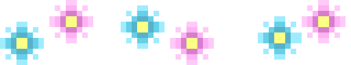

Noa Jacquemin
Je suis étudiante en infographie option design web et dessinatrice à mes heures perdues.
Une touche créative
Actuellement en plein apprentissage, je développe mes compétences en design web et dans le reste de l’infographie en général. Je suis quelqu’un qui aimera toujours ajouter une touche de créativité personnelle à ses projets dans le but de les rendre uniques.
Mes compétences techniques
Je trouve mes forces dans les branches du développement artistique et conceptuel des projets. J’aime adapter des projets en fonction de l’utilisateur ou d’une direction artistique spécifique. La recherche d’inspiration est devenue presque quotidienne pour moi, surtout dans mes projets personnels.
-
La suite Adobe
After effect, Illustrator, InDesign et Photoshop sont ceux que j’utilise le plus souvent pour créer différents assets.
-
Figma
Pour réaliser mes moodboards lors de la recherche artistique, la création de wireframes et travailler le design de mes projets.
-
Ibis paint et Kryta
Ce sont les logiciels de dessin que j’utilise, bien qu’un crayon, une gomme et un bout de nappe en papier me conviennent parfaitement aussi.
-
HTML/SCSS/JS
Les différents types de langages que j’utilise pour mettre en forme mes sites web.
Mes projets web
-
Dataplay
Nous avons réalisé une carte interactive associée à un système de filtres qui recense tous les ovnis aperçus en plus de 100 ans dans l’Union européenne. Le but était d’apprendre à manipuler une base de données JSON. Un atelier de deux semaines rempli de rires et de caféine.
-
Rethinking UX
Un travail de groupe visant à améliorer notre espace de travail scolaire. Le but était de présenter un projet adapté aux besoins des élèves et de le réaliser physiquement afin de l’installer en classe. Nous avons rapidement compris que nous n’étions pas des menuisiers professionnels.
-
Décembre
La création d’une landing page sur un produit spécifique. Le but était de mettre ce produit en avant et de mettre en place une procédure d’achat en ligne via des formulaires.
Mes projets personnels
Deckbuilding
Quelques illustrations réalisées pour un prototype de jeu de deckbuilding.